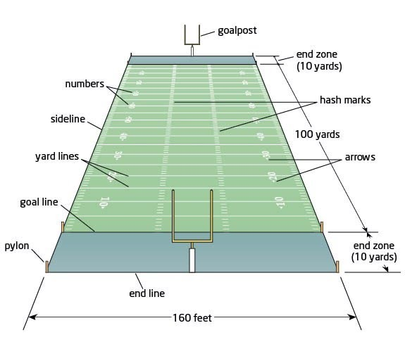
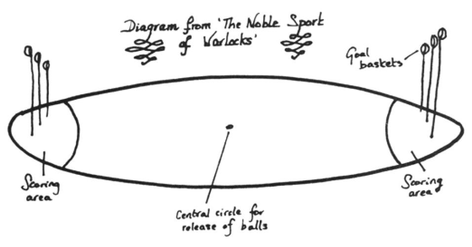

Chapter 16 Generating Function Exercises
Pro Tip. When solving recurrences using generating functions, it is nice to know that you have the right answer. So you should get into the habit of checking along the way!
Before: Calculate the first few \(a_n\) using the recurrence. Mathematica is a great tool for this! For example, the following code will print out the first terms of the sequence \(a_0 = 3\text{,}\) \(a_1 = 5\text{,}\) \(a_n = 2a_{n-1} + a_{n-2} + 4\text{.}\)
myseq[0] = 3
myseq[1] = 5
myseq[n_] := 2 myseq[n-1] + myseq[n-2] + 4
Table[myseq[k], {k,0,5}]
During: Once you have a candidate generating function, you can use the Series[] function in Mathematica to find the first terms of its Taylor series. These values should match the values above (NOTE: if you are using an exponential generating function, then you must divide these values by n!)
After: Once you have a simple formula for the sequence, you can calculate the first few values and compare once again. Mathematica is your friend.
Exercises Exercises
1.
Here is a potpourri of counting problems. In each case,
Find a concise generating function for answering the question, and
identify what coefficient you need.
You do not need to actually solve the problem, but feel free to do so using Mathematica, if you like.
How many ways are there to distribute 14 forks to 10 people so that each person receives one or two forks?
You can buy soda either by the can, or in 6-, 12-, 24- or 30-packs. How many ways are there to buy exactly \(k\) cans of soda?
How many ways are there to put a total postage of 75 cents on an envelope, using 3-, 5-, 10- and 12-cent stamps?
You go to a Halloween party dressed as mathematician Paul Erdos. While there, you select 24 pieces of candy from among five different types. How many ways can you do this if you want at least two pieces of candy of each type?
How many solutions to \(z_1+z_2+z_3 = 15\) are there, where each \(z_i\) is an integer satisfying \(0 \leq z_i \leq 8\text{?}\)
How many ways are there to make change for a dollar using only pennies, nickels, dimes and quarters?
2.
We consider two sports with tricky scoring rules.
-
American Football is played on a rectangular field between two teams. The field is 100 yards long, with a ten yard end zone at each end, each of which has a set of goalposts. The game is played with a single ball in the shape of a prolate spheroid.
The offensive team tries to advance the ball down the field. While on offense (in possession of the ball), a team can score in four wayskicking a field goal (3 points) by kicking the ball through the goalposts in the opposing team's end zone;
scoring a touchdown (6 points) by advancing the ball across the length of the field and into the opposing team's end zone;
scoring a touchdown plus extra point (7 points) by following up this touchdown by kicking the ball through the goalposts; and
scoring a touchdown plus two-point conversion (8 points) by following up this touchdown with another successful offensive scoring play.
While on defense (not in possession of the ball), a team can score in one way:
scoring a safety (2 points) by tackling the ball carrier (on the opposing team) in his own endzone.
The game is played for sixty minutes. Use the product principle for generating functions to find a concise formula for \(F(x)\text{,}\) the generating function for the number of ways to to score \(n\) points in a football game.
-
Quidditch is played on an oval pitch, five hundred feet long. At each end, there are three hooped goal posts of different heights, surrounded by a scoring area. The game is played with four bewitched flying spherical balls: two Bludgers, one Quaffle and one Snitch.
Two teams of wizards on flying broomsticks zip around the pitch trying to score points. This can be done in two ways.Sending the Quaffle through any of the three (distinct) goal hoops in the appropriate scoring area (10 points); and
Capturing the Snitch (150 points).
The game ends when the Snitch is caught, or an agreement is reached between the captains of both teams. Use the product principle for generating functions to find a concise formula for \(Q(x)\text{,}\) the generating function for the number of ways to to score \(n\) points in a Quidditch game. (Note: you must treat the three goal hoops as distinct.)
3.
Use generating functions to find an explicit formula for \(b_n\) if \(b_0=3\) and \(b_1=7\) and \(b_n = 3 b_{n-1} - 2 b_{n-2}\) for \(n \geq 2\text{.}\)
4.
Consider the Fibonacci recurrence \(f_0=0\text{,}\) \(f_1=1\) and \(f_n = f_{n-1} + f_{n-2}\) for \(n \geq 2.\) Prove that the ordinary generating function of this sequence is
You do not need to find an explicit formula for \(f_n\text{.}\)
5.
Consider the recurrence \(a_0=1\text{,}\) \(a_1=2\text{,}\) and \(a_n = na_{n-1} + n(n-1) a_{n-2}\) for \(n \geq 2\text{.}\)
Find the exponential generating function \(A(x)\) for this sequence.
Compare \(A(x)\) to \(F(x)\) from the previous Fibonacci problem. From this find a formula for \(a_n\) as a function of Fibonacci numbers \(f_k\text{.}\) In other words, you will get an expression for \(a_n\) that includes term(s) of the form \(f_k\text{.}\) (Note: the fact that \(f_0=0\) will be helpful as you change from functions back to power series.)
6.
Consider the recurrence \(a_0=1\) and \(a_n = n a_{n-1} + 3^n\) for \(n \geq 1.\)
Find the exponential generating function for \(a_n\text{.}\)
Find an explicit formula for \(a_n\text{.}\) Your final answer will involve a summation.
7.
A coin pyramid is an arrangement of n coins in rows such that
Coins in each row form a contiguous block
For \(k>1\text{,}\) coins in the \(k\)th row touch exactly 2 coins from the row beneath it.
Here is an example of a coin pyramid with 10 coins in the first row:
Let \(a_n\) be the number of coin pyramids with \(n\) coins in the first row. We have \(a_1=1\) and \(a_2=2\text{.}\)The sequence satisfies \(a_n = \sum_{j=1}^n (n-j) a_j +1\) for \(n \geq 1\text{.}\) Give a combinatorial proof of this recurrence. Note that this formula also holds for n=1 (which makes life easier for us)
List all the coin pyramids for \(n=1,2,3,4.\) (You can figure out how many there are using the recurrence.)
Let \(A(x) = \sum_{n=0}^{\infty} a_n x^n\text{,}\) the ordinary generating function for coin pyramids. Starting with the recursion above, find a simple closed formula for \(A(x)\text{.}\)
8.
A group of people decide to play a game called "Night of the Zombie King." The people are split into a team of zombies and a team of humans. The people are considered distinct, but there are only 4 types of roles in the game.
A team of \(n \geq 1\) zombies consists of one Zombie King and \(n-1\) regular zombies. You cannot have a zombie team of size 0. Let \(z_n\) be the number of ways to create a zombie team from \(n\) people (so \(z_0=0\)). Let \(Z(x)\) be the exponential generating function for creating a zombie team. What is the formula for \(Z(x)\text{?}\)
A human team of \(n\) people is partitioned into two subsets: militia and townsfolk. It is possible for the human team to have 0 members. It is also possible for all humans to be militia and none to be townsfolk, or vice versa. Let \(h_n\) be the number of ways to create a human team starting with \(n\) people (so \(h_0=1\)). Let \(H(x)\) be the exponential generating function for creating a human team. What is the formula for \(H(x)\text{?}\)
Let \(g_n\) be the number of ways to split \(n\) people into teams of zombies and humans. We are allowed to take any subset of the people to be on the zombie team. Use parts (a) and (b) to find a simple expression for the exponential generating function \(G(x) = \sum_{n=0}^{\infty} g_n \frac{x^n}{n!}\text{.}\)
Use part (c) to find a simple formula for \(g_n\text{.}\)
Give a combinatorial explanation for the formula in part (d).
9.
In this problem, you will create the exponential generating function for the number of surjections onto a set of size \(k\text{.}\)
Let \(t_n\) be the number of surjections from \([n]\) to \([1]\text{,}\) where \([1] = \{ 1 \}\) is the set of size 1. Find the formula for the EGF \(T(x) = \sum_{n=0}^{\infty} t_n \frac{x^n}{n!}.\) (And pay close attention to the value of \(t_0\text{.}\)).
Explain why \(T(x)^2\) is the EGF for the number of surjections from \([n]\) to \([2]\text{.}\)
Find the formula for the EGF for the number of surjections from \([n]\) to \([k]\text{.}\)
-
Use your answer from part (c) to prove that the EGF for set partitions into exactly \(k\) parts is
\begin{equation*} S_k(x) = \frac{1}{k!} (e^x -1)^k. \end{equation*}